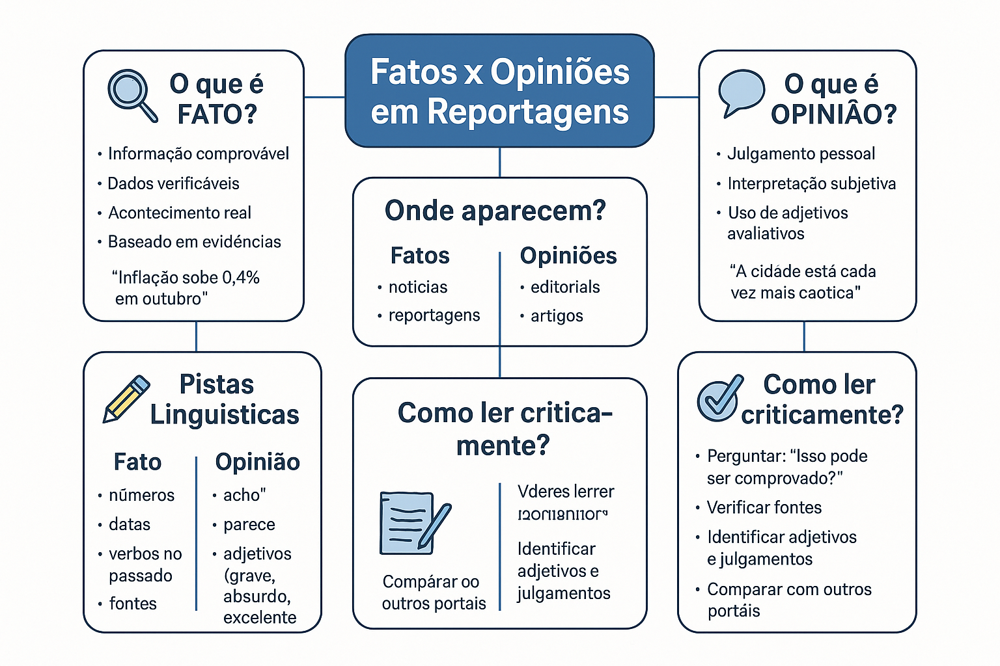

Fatos x Opiniões em Reportagens: como identificar e ler criticamente no ENEM e concursos
Em uma era marcada por enxurradas de informações, redes sociais aceleradas e manchetes tendenciosas, a habilidade de diferenciar fato de opinião tornou-se a ferramenta mais crucial de letramento midiático e cidadania. Nas provas do ENEM, do PAES UEMA e em grandes concursos públicos (como Cebraspe, FGV e Vunesp), essa competência é cobrada sistematicamente para avaliar se o candidato lê os textos jornalísticos de forma crítica ou se é facilmente manipulado por juízos de valor disfarçados de neutralidade.
Muitos estudantes erram questões desse tipo porque procuram opiniões explícitas com marcadores óbvios como "eu acho que" ou "na minha visão". No jornalismo profissional, a opinião quase nunca aparece de maneira ingênua: ela se insinua sutilmente por meio de adjetivos valorativos, verbos de atitude, recortes estatísticos seletivos e na escolha de quem é ouvido e de quem é silenciado na reportagem.
Neste guia completo, você aprenderá a mapear a fronteira entre dados verificáveis e julgamentos subjetivos, dominará as marcas linguísticas da opinião disfarçada e consolidará sua leitura com nosso quiz avançado de 10 questões com gabarito comentado.

1. A Fronteira Conceitual: Fato Verificável vs. Opinião Interpretativa
Para não cair em pegadinhas conceituais nas provas, é fundamental estabelecer a distinção teórica entre os dois polos da informação:
Fato (Informação Objetiva / Verificável)
É um dado da realidade que independe da crença, da ideologia ou do sentimento de quem o relata. Pode ser comprovado por documentos, perícias, estatísticas oficiais, fotos ou testemunhos diretos. Um fato é verdadeiro ou falso; ele não admite "meio-termo" de gosto pessoal. Se dissermos que "o termômetro marcou 38 °C às 14h em São Luís", estamos diante de um fato mensurável.
Opinião (Julgamento Subjetivo / Valorativo)
É uma interpretação, avaliação moral, política ou estética que uma pessoa ou instituição faz sobre um fato. Não é passível de prova definitiva, pois reflete um ponto de vista que sempre admite discordância fundamentada. Se dissermos que "a temperatura de 38 °C foi sufocante e insuportável", entramos no terreno da opinião e da experiência sensível individual.
Cuidado com a Armadilha: Dado Estatístico vs. Adjetivação do Dado!
As bancas adoram criar alternativas enganosas misturando números com palavras de julgamento:
• "A taxa de desemprego caiu para 7,5% no trimestre (FATO)."
• "A taxa de desemprego caiu para animadores 7,5%, um reflexo da brilhante condução econômica (OPINIÃO)."
O número é um fato verificável; as palavras "animadores" e "brilhante" são modalizadores opinativos que tentam induzir a aprovação do leitor. Fique atento a quem qualifica o número!
2. O Espectro dos Gêneros Jornalísticos: onde mora a opinião?
Nem todo texto que circula em um jornal ou portal de notícias tem o mesmo compromisso com a objetividade. Os gêneros organizam-se em uma escala gradual de subjetividade:
Grau de subjetividade na imprensa:
- 1. Notícia (Alta objetividade / Relato direto): Focada estritamente no fato imediato. Responde às perguntas essenciais do Lide (O quê? Quem? Quando? Onde? Como? Por quê?). O repórter busca a neutralidade e evita emitir opiniões pessoais sobre o ocorrido.
- 2. Reportagem (Investigação aprofundada / Contextualização): Gênero mais amplo que a notícia. Traz dados históricos, infográficos, múltiplas entrevistas e desdobramentos. Embora busque fundamentar-se em fatos, a escolha das fontes e a organização dos dados frequentemente revelam um ângulo interpretativo.
- 3. Reportagem Interpretativa / Análise Econômica ou Política: Texto assinado por jornalistas especializados que combinam a apuração dos fatos com projeções, cenários futuros e diagnósticos sobre as causas profundas dos problemas sociais.
- 4. Editorial e Artigo de Opinião (Subjetividade declarada): Gêneros 100% argumentativos. O editorial manifesta o posicionamento institucional da empresa jornalística (sem assinatura pessoal), enquanto o artigo expressa a tese de um colunista convidado (obrigatoriamente assinado).
3. Marcas Linguísticas da Opinião Disfarçada
Em provas de alto nível (como ENEM e PAES UEMA), a questão pede para apontar a palavra exata que "denuncia" a presença de opinião em um parágrafo aparentemente informativo. Observe os recursos mais comuns:
| Recurso Linguístico | Como Funciona no Texto | Efeito de Sentido Gerado | Exemplo Comentado |
|---|---|---|---|
| Adjetivos Axiológicos (Valorativos) | Qualificam seres e eventos com base em critérios de aprovação ou repúdio. | Direcionam as emoções do leitor, julgando o fato como positivo ou nefasto. | "Aprovou-se uma lei draconiana." ("draconiana" é julgamento depreciativo; fato é a aprovação da lei). |
| Advérbios de Atitude / Modo | Expressam a reação emocional do enunciador diante da informação relatada. | Revelam lamentação, alívio, surpresa ou censura por parte de quem escreve. | "Lamentavelmente, a conferência terminou sem acordo." (a ausência de acordo é o fato; o advérbio é o juízo de valor). |
| Verbos de Dicendi (Elocução) Tendenciosos | Introduzem a fala de uma testemunha ou autoridade com viés interpretativo. | Podem conferir credibilidade ou descredibilizar a fala citada. | Dizer que o ministro "esclareceu" (fato positivo) vs. dizer que o ministro "alegou" ou "insinuou" (sugere desconfiança). |
| Modalizadores de Probabilidade e Hipótese | Verbos e locuções que indicam incerteza, previsão ou desconfiança. | Transformam uma hipótese não confirmada em insinuação alarmista. | "O projeto tende a arruinar as contas públicas." (projeção subjetiva, não fato consolidado). |
| Termos Pejorativos ou Eufemismos | Escolha de sinônimos carregados de conotação ideológica. | Glorificam ou criminalizam agentes sociais envolvidos no mesmo fato. | Chamar um grupo de "manifestantes reivindicando direitos" vs. "baderneiros tumultuando a ordem". |
Estudo de Caso: O mesmo fato relatado com diferentes cargas opinativas
Versão 1 (Puramente Factual): "A Câmara dos Deputados aprovou, por 320 votos a favor e 140 contra, o projeto de reforma tributária na noite de ontem."
Análise: Informação neutra, documental, com dados estatísticos e temporalidade precisa. Fato estrito.
Versão 2 (Opinião Favorável Disfarçada): "Em votação histórica, a Câmara dos Deputados aprovou ontem o aguardado projeto que finalmente modernizará o anacrônico sistema tributário nacional."
Análise: Os termos "histórica", "aguardado", "finalmente" e "anacrônico" são juízos valorativos que exaltam a aprovação como vitória civilizatória.
Versão 3 (Opinião Desfavorável Disfarçada): "Apressadamente, a Câmara dos Deputados aprovou ontem um remendo tributário confuso, que ameaça a autonomia dos municípios e castigará os consumidores."
Análise: "Apressadamente", "remendo confuso", "ameaça" e "castigará" são modalizadores que condenam a medida antes mesmo de seus efeitos práticos.
4. Fato Atribuído vs. Opinião do Próprio Veículo
Em reportagens, é muito comum que o jornalista mantenha a sua própria neutralidade, mas cite fontes externas que expressam opiniões divergentes.
A regra das fontes: De quem é a opinião?
Quando o texto diz: "Segundo o presidente do sindicato, a nova escala de trabalho é um retrocesso inaceitável":
• O fato para o leitor: É fato incontestável que o presidente do sindicato pronunciou aquela frase durante a entrevista.
• O conteúdo da frase: A declaração de que a escala é um "retrocesso inaceitável" é uma opinião subjetiva da fonte ouvida.
Nas provas do ENEM e concursos, preste muita atenção ao comando: a questão pode perguntar se a opinião é do autor do texto ou de uma personagem/fonte citada na matéria!
5. Como Fato e Opinião caem nas Provas
Diretrizes das principais bancas:
ENEM: Trabalha intensamente a Competência 1 e 7 da Matriz de Referência ("Reconhecer diferentes estratégias de persuasão em textos de circulação social" e "Identificar marcas linguísticas de posicionamento"). Cobra a capacidade do estudante de perceber a intenção ideológica escondida em reportagens e notícias.
PAES UEMA: Foca na análise sintática e semântica de vocábulos. As questões costumam pedir a identificação do termo que carrega juízo de valor ou perguntam se determinada afirmação do texto decorre de observação empírica ou de julgamento pessoal do articulista.
Concursos Públicos (Cebraspe, FGV, FCC): Utilizam o modelo clássico: "Assinale a alternativa que apresenta um enunciado estritamente factual, isento de qualquer juízo de valor do narrador" ou cobram a reescrita de trechos opinativos para uma forma puramente objetiva.
Quiz sobre Fatos x Opiniões em Reportagens
Questões de fixação — Nível Avançado
Questão 1 — (ENEM/Vestibulares) Leia a manchete: "Inflação oficial desacelera para 0,24% em agosto, mas custo dos alimentos continua sendo um fardo insuportável para as famílias de baixa renda."
A respeito dos elementos constitutivos dessa manchete, é correto afirmar:
Questão 2 — (Foco: Concursos Públicos) Assinale a alternativa cujo trecho apresenta um enunciado estritamente factual, isento de termos valorativos ou posicionamento opinativo do redator:
Questão 3 — Leia o parágrafo de uma matéria sobre mobilidade urbana:
"A prefeitura inaugurou ontem 15 quilômetros de ciclovias na zona sul da capital. Segundo o secretário de trânsito, a medida representa a modernização definitiva da cidade; contudo, líderes comunitários afirmam que a obra é um desperdício inútil de recursos públicos."
Analisando a estrutura discursiva do trecho, constata-se que o jornalista:
Questão 4 — Leia a frase: "O atacante do time adversário caiu dentro da grande área aos 44 minutos do segundo tempo."
Para converter esse relato factual em uma afirmação predominantemente opinativa, o redator deveria escrever:
Questão 5 — (Foco: PAES UEMA) Em uma notícia sobre o patrimônio histórico de São Luís, lê-se: "As fachadas de azulejos portugueses conferem uma beleza ímpar ao Centro Histórico, atraindo milhares de turistas todos os anos."
O termo que introduz uma apreciação estética e subjetiva (opinião) no enunciado é:
Questão 6 — Considere os dois títulos jornalísticos sobre a mesma manifestação pública:
I. "População indignada ocupa praça central em protesto legítimo contra o corte de salários."
II. "Cerca de 2.000 pessoas reuniram-se na praça central durante manifestação salarial nesta manhã."
Comparando os enunciados I e II, é correto afirmar que:
Questão 7 — Leia: "A decisão judicial foi, sem dúvida, a mais sensata diante do cenário caótico criado pela empresa."
As expressões "sem dúvida", "mais sensata" e "caótico" funcionam, no texto, como:
Questão 8 — Em reportagens investigativas sobre temas científicos, os jornalistas frequentemente escrevem: "Segundo os pesquisadores, a nova vacina pode indicar o princípio do fim da doença."
O uso da locução "pode indicar" revela que a afirmação:
Questão 9 — (ENEM) Ao interpretar textos jornalísticos em exames seletivos, reconhecer que uma reportagem nunca é 100% "neutra" permite ao estudante:
Questão 10 — Assinale a alternativa em que a manchete apresenta uma opinião institucional típica de um editorial, e não um relato noticioso:
Resumo: checklist para separar fato de opinião
- Fato é Verificável: Pode ser conferido em registros cartoriais, dados estatísticos, vídeos ou documentos oficiais.
- Opinião é Valorativa: Traduz um sentimento, uma tese ideológica ou um julgamento moral (sempre admite discordância).
- Desconfie dos Adjetivos: Termos como grave, desastroso, histórico, maravilhoso, inaceitável são pistas imediatas de opinião.
- Identifique a Fonte: Verifique se a opinião pertence ao repórter que assina a matéria ou se é a declaração de um entrevistado/autoridade.
- Separe o Número da Análise: O índice percentual é o fato; a afirmação de que ele é "insuficiente" ou "fantástico" é a opinião.
Conclusão
Aprender a distinguir fato de opinião não serve para nos tornar cínicos diante das notícias, mas sim para nos transformar em leitores emancipados. Em avaliações como o ENEM, vestibulares e concursos, a banca premia o candidato que não se deixa levar pela comoção de adjetivos fáceis e que sabe rastrear a informação sólida em meio ao ruído interpretativo. Ao ler qualquer texto informativo, faça sempre a pergunta essencial: "O que aconteceu de fato e o que o autor pensa sobre o que aconteceu?". Essa simples chave analítica garantirá seu sucesso em qualquer questão de interpretação.
Perguntas frequentes sobre Fatos e Opiniões
Existe notícia 100% imparcial e livre de qualquer opinião?
Na teoria da comunicação, a neutralidade absoluta é uma utopia. Desde o momento em que o jornalista escolhe qual assunto merece virar manchete (e quais serão ignorados), quais fontes serão entrevistadas e quais palavras serão usadas no título, já existe um enquadramento subjetivo. No entanto, o jornalismo ético se esforça para relatar os fatos verificáveis com honestidade e dar espaço ao contraditório.
Como saber se uma frase em uma prova é fato ou opinião?
Faça o teste da comprovação empírica: "Essa frase pode ser provada como verdadeira ou falsa por meio de uma perícia, foto, gravação ou documento oficial?". Se a resposta for sim, é um fato. Se a frase depender de critérios pessoais, morais ou de gosto (onde duas pessoas honestas podem discordar legitimamente), trata-se de uma opinião.
Quando uma autoridade fala na reportagem, o conteúdo da fala é fato ou opinião?
É preciso separar dois níveis: que a autoridade concedeu a entrevista e pronunciou aquelas palavras é um fato histórico documentado. Já o conteúdo da fala da autoridade (ex.: "O ministro declarou que a nova lei salvará a economia") é uma opinião daquela autoridade, e não um fato econômico consumado.
Qual a diferença entre manchete factual e manchete opinativa?
A manchete factual limita-se a relatar o evento com verbos de ação no passado e dados objetivos (ex.: "Tribunal condena ex-governador a oito anos de prisão"). A manchete opinativa antecipa um julgamento ou sensação (ex.: "Em decisão histórica e exemplar, tribunal faz justiça ao condenar ex-governador").
Continue aperfeiçoando sua leitura crítica
- Como identificar a ideia principal de um texto: técnicas para provas
- Inferências na Interpretação Textual: como identificar informações implícitas
- Identificação de Tipos de Texto: narrativo, descritivo, dissertativo, expositivo e injuntivo
- Como interpretar notícias e reportagens: diferenciando fato de opinião
- Como interpretar editoriais e artigos de opinião: estratégias para o ENEM e concursos
Referências
- CHARAUDEAU, Patrick. O discurso das mídias. São Paulo: Contexto.
- FIORIN, José Luiz. Linguagem e ideologia. São Paulo: Ática.
- LAGE, Nilson. A reportagem: teoria e técnica de entrevista e pesquisa jornalística. Rio de Janeiro: Record.
- MARCUSCHI, Luiz Antônio. Da fala para a escrita: atividades de retextualização. São Paulo: Cortez.
- MEDINA, Cremilda. Entrevista: o diálogo possível. São Paulo: Ática.
Explore Outros Conteúdos
Continue seus estudos acessando outras seções do site Mestre Kira: